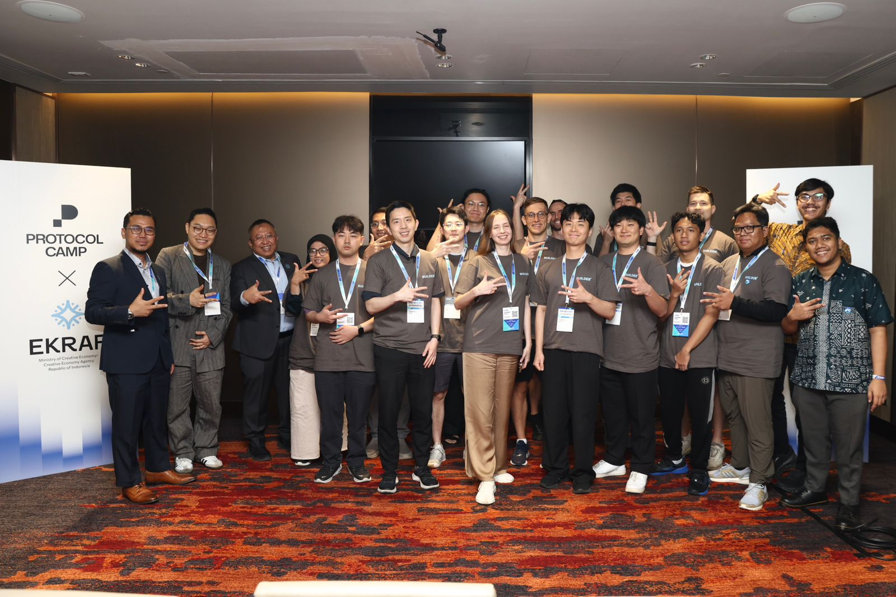
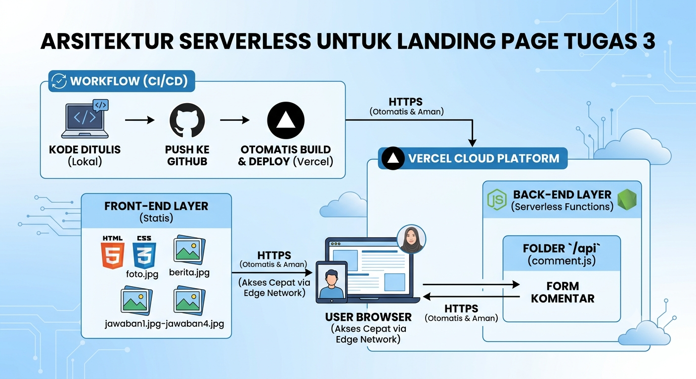

.png)
Sampurasun
Mahasiswa, Asisten Peneliti, AI Enthusiast.
LinkedIn Profile
Mahasiswa, Asisten Peneliti, AI Enthusiast.
LinkedIn Profile
Perencanaan & Persiapan Server: Landing Page Tugas 3
Dalam pengerjaan Tugas 3 ini, saya melakukan perencanaan server dengan pendekatan Serverless Architecture, di mana use case yang saya bangun adalah landing page akademik yang interaktif untuk menampilkan biodata dan jawaban kuis.
Berikut adalah alur perencanaan dan persiapan yang saya lakukan:
Pemilihan Arsitektur Serverless:
Saya memilih menggunakan Vercel karena arsitekturnya yang serverless. Dengan ini, saya tidak perlu direpotkan dengan manajemen OS server atau hardware fisik, karena seluruh pengelolaan infrastruktur sudah ditangani secara otomatis oleh cloud provider.
Implementasi Workflow CI/CD:
Workflow yang saya terapkan adalah CI/CD (Continuous Integration/Continuous Deployment). Dalam proses ini, setiap kode yang saya tulis langsung saya push ke GitHub, yang kemudian memicu Vercel untuk mendeteksi perubahan, melakukan build otomatis, dan langsung menayangkan pembaruan tersebut di internet.
Struktur Arsitektur Sistem:
Front-End Layer: Saya menyusun tampilan statis seperti index.html, style.css, dan seluruh aset gambar agar dilayani langsung oleh Vercel Edge Network untuk menjamin kecepatan akses.
Back-End Layer: Untuk logika backend, saya menempatkannya di folder /api (contohnya comment.js). Vercel secara cerdas mengenali ini sebagai Serverless Function yang hanya aktif saat ada request (seperti pengiriman komentar), sehingga penggunaan sumber daya menjadi sangat efisien.
Keamanan dan Manajemen:
Keamanan server telah terjamin secara auto-secure berkat sertifikat SSL/HTTPS dari Vercel. Saya juga menggunakan GitHub sebagai version control yang memungkinkan saya untuk melakukan update atau rollback kapan saja dengan mudah.
Alur Data:
Alur kerja saya dimulai saat pengguna mengakses landing page → request dikirim ke Vercel → Vercel menyajikan file statis kepada browser → jika terdapat interaksi pada form komentar, request diproses secara dinamis melalui Serverless Function di folder /api.
Kesimpulan:
Perencanaan yang saya lakukan berfokus pada otomatisasi workflow. Dengan mengintegrasikan GitHub dan Vercel, landing page tugas saya tidak hanya fungsional secara akademik, tetapi juga memiliki arsitektur yang modern, aman, dan sangat mudah untuk dikelola.

Laporan Pemetaan Tata Kelola TI: Proyek "Pojok Tugas"
Deskripsi: Platform digital untuk pengumpulan tugas, verifikasi nilai, dan notifikasi otomatis bagi orang tua.
a. Keselarasan Strategi
Saya membangun sistem ini untuk mendigitalisasi alur pengumpulan tugas agar lebih efisien dan terstruktur.
b. Penciptaan Nilai
Sistem ini mempercepat verifikasi tugas dan memberikan transparansi perkembangan akademik kepada orang tua melalui notifikasi otomatis.
c. Manajemen Sumber Daya
Saya menggunakan arsitektur cloud (Vercel) dan version control (GitHub) untuk memusatkan pengelolaan aset digital tanpa perlu server fisik.
d. Manajemen Risiko
Data diamankan melalui sistem version control untuk pemulihan data dan enkripsi HTTPS otomatis guna menjaga privasi informasi.
e. Pengukuran Kinerja
Kinerja diukur berdasarkan kecepatan deployment otomatis dan efektivitas pengiriman notifikasi status tugas kepada orang tua.
Rencana Pengembangan (Next Development)
Migrasi Database: Mengalihkan data ke database relasional agar pengelolaan lebih terstruktur.
Integrasi Bot WhatsApp: Mengotomatisasi laporan status tugas kepada orang tua melalui API.
Dashboard Monitoring: Membangun dashboard untuk memantau status tugas secara real-time.